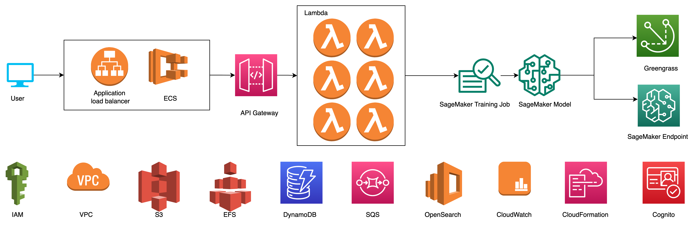

About All-In-One AI
Background
2022 Gartner Survey revealed a 3.6% year-over-year growth rate, the fastest in more than a decade. In terms of specific technologies driving this surge in expenditure would be artificial intelligence (AI) and machine learning (ML), accounting for a whopping 48% of the whole pie. The survey also highlights the relative immaturity of AI technologies compared to the other innovation areas. Just over half of respondents report significant target customer adoption of their AI-enabled products and services. 41% of respondents cited AI emerging technologies as still being in development or early adoption stages, meaning there is a wave of potential adoption as new or augmented AI products and services enter general availability.
Technology immaturity is cited as a top reason among AI-investing organizations leading to failure when integrating an emerging technology. Furthermore, product leaders investing in AI whose implementations are progressing slower than expected reported product complexity and a lack of skills as the main hindrances to their progress. There are a couple of industry AI/ML models built on top of AWS SageMaker as the supplement of AWS managed AI/ML services. Those AI/ML models are scattered, lack of web visualization, and not ready to present to customer directly, especially for the customers’ business staff. The customers may not aware of the existing matured AI/ML models which can solve their complex business problems. It will be nice to allow the customers to get aware of the matured AI/ML models existing in AWS for specific industry AI/ML scenarios and experience the AI/ML models in an intuitive way and adopt directly or after customization.
Target customers
The customers can be defined as business related (business owner and business operation) and IT related (data scientist and application developer).
-
Business owner is more focused on the business impact in general and usually it is the decision-maker.
-
Business operation is more focused on daily business operation and usually it is the end-user of the business operation system.
-
Data scientist is more focused on the creation, fine-tuning and performance measurement of the AI/ML model which will be used in the business operation system.
-
Application developer is more focused on the engineering implementation of the business operation system.
To be simplified, term “Business” will represent the business owner and business operation in short and term “IT” will represent the data scientist and application developer in short.
Solution overview
This solution includes AI/ML models suitable for specific business scenarios, such as object detection, image classification, text recognition, object extraction/generation, text summarization, intent recognition, knowledge graph, time series prediction, etc. which can be commonly used in manufacturing, maintenance, enterprise security production, content production, document recognition, comment recognition, short video content understanding and generation, personalized recommendation, advertisement placement, sales forecast, etc.
This solution includes the basic functions of data labelling, model training, deployment and inference in the cloud and device terminals commonly used in the AI/ML process, enabling the entire process to achieve low threshold, full functionality, visualization, and customization. Customer can also complete the entire AI/ML process through a graphical interface to solve business problems in specific business scenarios even they don’t have in-depth knowledge on AI/ML.
This solution can further export AI/ML models for these specific business scenarios, providing complete source code, demo web sites, and automated deployment methods that enterprise customers can use directly or further customize. Help enterprise customers accelerate the entire AI/ML implementation process, and promote enterprises to transfer more business loads to AWS.
Features
-
Multiple industrial models and visualized demonstrations supported
Multiple industrial models are already supported, including track maintenance, PPE detection, image classification, image search, document recognition, receipt recognition, generic object detection, customer sentiment analysis, summary generation, text labeling, entity and relationship extraction from documents, etc., Demonstrate real-time inference or run batch inference tasks in an intuitive way
-
Multiple machine learning algorithms supported
A variety of machine learning algorithms have been supported, including object detection, image classification, OCR/table recognition, text summarization, text classification, named entity/relationship recognition, fine-grained sentiment analysis, etc. You can use your own based on the supported algorithms Data on demand to customize industrial models.
-
Complete machine learning process supported
Supports multiple machine learning tasks such as labeling, training, cloud/edge deployment, real-time reasoning, batch reasoning, pipeline, etc., provides comprehensive API support to facilitate customized development, provides various sample codes, and provides deployment scripts to realize automatic deployment in global regions.
Architecture

- Use Amazon Application Load Balancer to distribute traffic to backend web servers
- Use Amazon ECS to host your web server
- Use Amazon API Gateway to proxy various HTTP/WebSocket requests
- Use Amazon Lambda to implement backend functions of various web servers
- Use Amazon SageMaker for AI/ML model training, deployment, and inference
- Management of IoT core devices/thing groups, components, deployments using Amazon Greegrass
- Use Amazon IAM to manage access to resources
- Use Amazon VPC to divide and isolate network usage, put various resources in private subnets as much as possible, and access resources on Amazon cloud technology through VPC endpoint/interface endpoint
- Use Amazon S3 to save various data, model files, etc. of AI/ML models
- Use Amazon EFS to expand temporary storage for Amazon Lambda
- Use Amazon DynamodDB to save various metadata
- Use Amazon SQS to decouple upstream and downstream asynchronous data processing
- Use Amazon OpenSearch to save annotation results and implement KNN to search for graphs
- Use Amazon CloudWatch to monitor resources and applications
- Use Amazon CloudFormation to create and manage resources using templates
- Use Amazon Cognito to implement user identity management and authentication
Algorithms
There are 3 kinds of AI/ML algorithms supported in All-In-One AI:
-
computer vision algorithms for object detection, image classification, search by image, OCR, etc.
-
natural language processing algorithms for text summarization, text classification, keyword extract, named entity and relationship recognition, generative aspect based sentiment analysis, etc.
-
data algorithms for time series data forecast
Backend Lambda functions
Manage industrial scenarios
- List existing industrial scenarios
- all_in_one_ai_industrial_scenario (TBD)
- Create new industrial scenarios
- all_in_one_ai_industrial_scenario (TBD)
- Edit specific industrial scenarios
- Delete specific industrial scenarios
Manage algorithms
- List supported algorithms
- all_in_one_ai_algorithm
- Show specific algorithm
- all_in_one_ai_algorithm
Manage industrial models
- List existing industrial models
- all_in_one_ai_industrial_model
- Create new industrial models
- all_in_one_ai_industrial_model
- Edit specific industrial model
- all_in_one_ai_industrial_model
- Delete specific industrial model
- all_in_one_ai_industrial_model
Manage demonstrations
- Real-time inference demo with sample data
- all_in_one_ai_inference
- all_in_one_ai_invoke_endpoint
- Real-time inference demo with uploaded data
- all_in_one_ai_inference
- all_in_one_ai_invoke_endpoint
Manage transform jobs
- List batch transform jobs
- all_in_one_ai_transform_job
- Describe specific transform job
- all_in_one_ai_describe_transform_job
- Create new batch transform job
- all_in_one_ai_create_transform_job
- Stop specific running batch transform job
- all_in_one_ai_stop_transform_job
- Attach existed batch transform job
- all_in_one_ai_transform_job
- Detach existed batch transform job
- all_in_one_ai_transform_job
- Review transform job’s output
- all_in_one_ai_transform_job_review
Manage training jobs
- List training jobs
- all_in_one_ai_training_job
- Describe specific training job
- all_in_one_ai_describe_transform_job
- Create new training job
- all_in_one_ai_create_training_job
- Stop specific running training job
- all_in_one_ai_stop_training_job
- Attach existed training job
- all_in_one_ai_training_job
- Detach existed training job
- all_in_one_ai_training_job
Manage models
- List models
- all_in_one_ai_model
- List model package
- all_in_one_ai_model_package
- List model package group
- all_in_one_ai_model_package_group
- Describe specific model
- all_in_one_ai_describe_model
- Create new model
- all_in_one_ai_create_model
- Create new model package
- all_in_one_ai_model_package
- Create new model package group
- all_in_one_ai_model_package_group
- Delete specific model
- all_in_one_ai_model
- Attach existed model
- all_in_one_ai_model
- Detach existed model
- all_in_one_ai_model
Manage endpoints
- List endpoints
- all_in_one_ai_endpoint
- Describe specific endpoint
- all_in_one_ai_describe_endpoint
- Create new endpoint
- all_in_one_ai_create_endpoint
- Delete specific endpoint
- all_in_one_ai_endpoint
- Attach existed endpoint
- all_in_one_ai_endpoint
- Detach existed endpoint
- all_in_one_ai_endpoint
Manage rest APIs
- List rest APIs
- all_in_one_ai_api
- Describe specific rest API
- all_in_one_ai_api
- Create new rest API
- all_in_one_ai_create_api
Manage Greengrass components
- List Greengrass component versions
- all_in_one_ai_greengrass_component_version
- Describe specific Greengrass component version
- all_in_one_ai_greengrass_component_version
- Create new specific Greengrass component version
- all_in_one_ai_greengrass_create_component_version
Manage Greengrass deployment
- List Greengrass deployment
- all_in_one_ai_greengrass_deployment
- Describe specific Greengrass deployment
- all_in_one_ai_greengrass_deployment
- Create new specific Greengrass deployment
- all_in_one_ai_greengrass_create_deployment
- List Greengrass core devices
- all_in_one_ai_greengrass_core_devices
- List IoT thing groups
- all_in_one_ai_greengrass_thing_groups
Manage pipeline
- List pipeline
- all_in_one_ai_pipeline
- Describe specific pipeline
- all_in_one_ai_describe_pipeline_execution
- Create new specific pipeline
- all_in_one_ai_create_pipeline
- all_in_one_ai_create_pipeline_helper
- all_in_one_ai_finalize_pipeline
Manage image search
- Import images to OpenSearch
- all_in_one_ai_import_opensearch
- all_in_one_ai_import_opensearch_helper
- all_in_one_ai_import_opensearch_handler
- Search by images via OpenSearch
- all_in_one_ai_search_by_image
Quick start
- Start train
- all_in_one_ai_train
- all_in_one_ai_create_train_huggingface
- all_in_one_ai_create_train_pytorch
- all_in_one_ai_create_train_mxnet
- all_in_one_ai_create_tensorflow
- Start deploy
- all_in_one_ai_deploy
- all_in_one_ai_deploy_train_huggingface
- all_in_one_ai_deploy_train_pytorch
- all_in_one_ai_deploy_train_mxnet
- all_in_one_ai_deploy_train_tensorflow
Toolkits
- S3 toolkit
- all_in_one_ai_s3
- Lambda toolkit
- all_in_one_ai_function
- DynamoDB/SSM/OpenSearch function toolkit
- all_in_one_ai_helper
- SageMaker toolkit
- all_in_one_ai_sagemaker
- Git toolkit
- all_in_one_ai_tools
- Video toolkit
- all_in_one_ai_video_producer
- all_in_one_ai_video_stream
- Websocket toolkit
- all_in_one_ai_websocket_connect
- all_in_one_ai_websocket_disconnect
- all_in_one_ai_websocket_login
- all_in_one_ai_websocket_command
- all_in_one_ai_websocket_report
Rest APIs
-
Overview
--- swagger: "2.0" info: version: "2023-01-09T10:02:49Z" title: "all-in-one-ai-api" host: "a4xh9o0fn1.execute-api.us-west-2.amazonaws.com" basePath: "/Prod" schemes: - "https" paths: /annotation: get: responses: {} post: responses: {} delete: responses: {} /api: get: responses: {} post: responses: {} /api/{api_name}: get: parameters: - name: "api_name" in: "path" required: true type: "string" responses: {} /deploy: post: responses: {} /endpoint: get: responses: {} post: responses: {} /endpoint/{endpoint_name}: get: parameters: - name: "endpoint_name" in: "path" required: true type: "string" responses: {} delete: parameters: - name: "endpoint_name" in: "path" required: true type: "string" responses: {} /function/{function_name}: get: parameters: - name: "function_name" in: "path" required: true type: "string" responses: {} /greengrass/component: get: responses: {} /greengrass/component/{component_name}: get: parameters: - name: "component_name" in: "path" required: true type: "string" responses: {} post: parameters: - name: "component_name" in: "path" required: true type: "string" responses: {} /greengrass/component/{component_name}/{component_version_arn}: get: parameters: - name: "component_name" in: "path" required: true type: "string" - name: "component_version_arn" in: "path" required: true type: "string" responses: {} /greengrass/coredevices: get: responses: {} /greengrass/deployment: get: responses: {} post: responses: {} /greengrass/deployment/{deployment_id}: get: parameters: - name: "deployment_id" in: "path" required: true type: "string" responses: {} /greengrass/thinggroups: get: responses: {} /industrialmodel: get: responses: {} post: responses: {} /industrialmodel/{model_id}: get: parameters: - name: "model_id" in: "path" required: true type: "string" responses: {} post: parameters: - name: "model_id" in: "path" required: true type: "string" responses: {} delete: parameters: - name: "model_id" in: "path" required: true type: "string" responses: {} /inference: post: responses: {} /model: get: responses: {} post: responses: {} /model/{model_name}: get: parameters: - name: "model_name" in: "path" required: true type: "string" responses: {} delete: parameters: - name: "model_name" in: "path" required: true type: "string" responses: {} /modelpackage: get: responses: {} /modelpackage/group: get: responses: {} post: responses: {} /modelpackage/{model_package_group_name}: get: parameters: - name: "model_package_group_name" in: "path" required: true type: "string" responses: {} post: parameters: - name: "model_package_group_name" in: "path" required: true type: "string" responses: {} /pipeline: get: responses: {} post: responses: {} /s3: get: responses: {} /sd/hypernetwork: get: responses: {} /sd/industrialmodel: get: responses: {} /sd/models: get: responses: {} post: responses: {} /sd/user: post: responses: {} /search/image: post: responses: {} /search/import: get: responses: {} post: responses: {} /train: post: responses: {} /trainingjob: get: responses: {} post: responses: {} /trainingjob/{training_job_name}: get: parameters: - name: "training_job_name" in: "path" required: true type: "string" responses: {} /transformjob: get: responses: {} post: responses: {} /transformjob/{transform_job_name}: get: parameters: - name: "transform_job_name" in: "path" required: true type: "string" responses: {} /transformjob/{transform_job_name}/review: get: parameters: - name: "transform_job_name" in: "path" required: true type: "string" responses: {} -
Train API
Create SageMaker training job - /train
Key Value HTTP Method POST HTTP Content-Type 'application/json' HTTP Request {
'model_algorithm': [name of model algorithm],
'industrial_model': [name of industrial model],
'instance_type': [instance type of SageMaker training job],
'instance_count': [instance count of SageMaker training job],
'model_hyperparameters': [model hyperparameters definitions in json string],
'inputs': [input data channel definitions in json string],
'training_job_name': [name of SageMaker training job]
}HTTP Response [Name of SageMaker training job] -
Deploy API
Create SageMaker deployment - /deploy
Key Value HTTP Method POST HTTP Content-Type 'application/json' HTTP Request {
'model_algorithm': [name of model algorithm],
'industrial_model': [name of industrial model],
'model_name': [name of SageMaker model],
'model_environment']: [model environment variable definition in json string],
'model_data_url': [S3 URI of model data file in tar.gz format],
'endpoint_name': [name of SageMaker endpoint],
'instance_type': [instance type of SageMaker endpoint],
'instance_count': [initial instance count of endpoint]
}HTTP Response {
'model_name': [name of SageMaker model],
'endpoint_name': [name of SageMaker endpoint]
} -
Inference API
Invoke SageMaker endpoint to inference - /inference
Property Value HTTP Method POST HTTP Request - Content-Type [MIME type of HTTP request body] HTTP Request - querystring endpoint_name : [name of SageMaker endpoint] HTTP Request - body [inference request which is up to model algorithm] HTTP Response [inference response from SageMaker endpoint which is up to model algorithm]